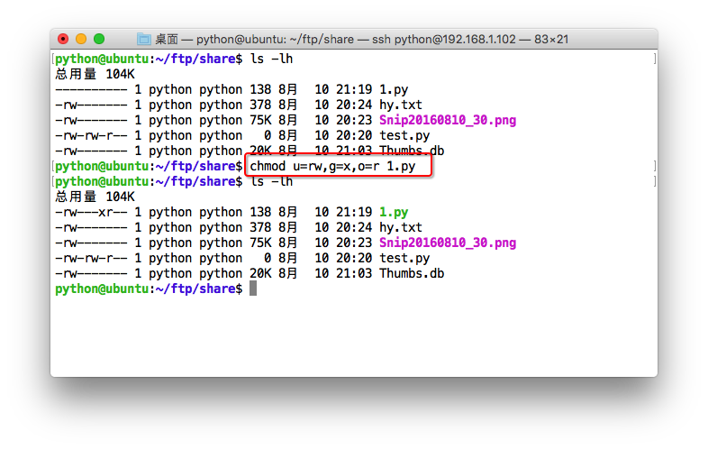

06-Linux 用户及权限
需要了解的用户及权限相关命令¶
- chmod
- chown
- who
- whoami
- passwd
- sudo -s
- exit
文件&目录权限¶
修改文件权限：chmod¶
使用ls -l可以查看文件&目录的权限
使用chmod可以修改文件权限
有两种使用格式：字母法与数字法。
字母法权限修改：rwx¶
chmod u/g/o/a +/-/= rwx 文件
| [ u/g/o/a ] | 含义 |
|---|---|
| u | user 表示该文件的所有者 |
| g | group 表示与该文件的所有者属于同一组( group )者，即用户组 |
| o | other 表示其他以外的人 |
| a | all 表示这三者皆是 |
| [ +/-/= ] | 含义 |
|---|---|
| + | 增加权限 |
| - | 撤销权限 |
| = | 设定权限 |
| rwx | 含义 |
|---|---|
| r | read 表示可读取，对于一个目录，如果没有r权限，那么就意味着不能通过ls查看这个目录的内容。 |
| w | write 表示可写入，对于一个目录，如果没有w权限，那么就意味着不能在目录下创建新的文件。 |
| x | excute 表示可执行，对于一个目录，如果没有x权限，那么就意味着不能通过cd进入这个目录。 |
- 常用的操作如下
# 修改一个文件所属用户的权限为可读可写
chmod u=rw 1.py
# 为文件添加所有人可执行权限
chmod a+x 1.py
如果需要同时进行设定拥有者、同组者以及其他人的权限，参考如下：

数字法权限修改：421¶
“rwx” 这些权限也可以用数字来代替
| 字母 | 说明 |
|---|---|
| r | 读取权限，数字代号为 "4" |
| w | 写入权限，数字代号为 "2" |
| x | 执行权限，数字代号为 "1" |
| - | 不具任何权限，数字代号为 "0" |
如执行：chmod u=rwx,g=rx,o=r filename 就等同于：chmod u=7,g=5,o=4 filename
chmod 751 file：
- 文件所有者：读、写、执行权限
- 同组用户：读、执行的权限
- 其它用户：执行的权限

注意：
- 如果想递归所有目录加上相同权限，需要加上参数“ -R ”。
- 如：
chmod 777 test/ -R递归 test 目录下所有文件加 777 权限
用户账户操作¶
Linux系统是一个多用户多任务的分时操作系统，每个用户账号都拥有独立的用户名和密码。用户在登录时键入正确的用户名和口令后，就能够进入系统和自己的主目录。
用户分类：
1、超级用户：UID=0
root：uid=0(root) gid=0(root) groups=0(root)
2、普通用户：UID范围（500-65535）
poplar用户 ：uid=1000(poplar) gid=1000(poplar) groups=1000(poplar)
3、伪系统用户：UID范围（1-499）
伪用户与系统和程序服务相关，因为并不是真实的使用者，所以叫伪用户。
如bin、daemon、shutdown、man等，任何Linux系统都默认有这些伪用户；mail、ftp、sshd等，与Linux系统的进程相关；
查看已有用户信息：
cat /etc/passwd
| 帐号 | 密码 | ID | 组ID | 用户名称 | 主目录 | 用户shell解释器 |
|---|---|---|---|---|---|---|
| root | x | 0 | 0 | root | /root | /bin/bash |
查看组信息：
cat /etc/group
用户账号的管理¶
- 创建用户
sudo adduser ttt 创建用户ttt
- 修改用户
sudo usermod -g g1 ttt将用户ttt所属组改为g1
- 删除用户
sudo userdel -r ttt
参数-r的作用是把用户的主目录一起删除。
用户组操作¶
- 添加组
groupadd usergroup
- 删除组
groupdel usergroup
修改文件所属用户和组：chown¶
- 修改文件的所属用户和组：
sudo chown poplar:poplar xxx.sh
- 递归修改文件夹的所属用户和组：
sudo chown -R poplar:poplar ./Backup
切换用户¶
切换到普通用户 su¶
su username 切换到username用户，当前路径不变
su - username切换到username用户，当前路径变更为/home/username
exit退出当前用户
切换到管理员账号 sudo su¶
Linux 下切换到root的命令:
sudo su 或sudo -s
同样也是使用exit退出当前用户

注意
新创建的用户，默认无法使用以上命令获取root权限切换到管理员帐号的，必须将其用户名通过sudo visudo按照以下规则添加进去，才可以获取到root权限。
用户名 ALL=(ALL) ALL
添加完成后按下Ctrl+x，然后输入大写字母Y，回车即可保存
用户密码管理：passwd¶
在Unix/Linux中，超级用户可以使用passwd命令为普通用户设置或修改用户密码。用户也可以直接使用该命令来修改自己的密码，而无需在命令后面使用用户名。
- 非超级用户只能修改自己的密码
poplar@PoplarTang:~$ passwd
Old password:******
New password:*******
Re-enter new password:*******
- 超级管理员用户root，可以修改其他用户密码
root@PoplarTang:/home/poplar# passwd poplar
New password:*******
Re-enter new password:*******
为了系统安全起见，要使用比较复杂的口令，最好使用8位以上的口令，并且口令中包含有大写、小写字母和数字
我是谁 whoami¶
whoami可以获取当前登录账户的用户名
退出登录账户： exit¶
- 如果是图形界面，退出当前终端；
- 如果是使用ssh远程登录，退出登陆账户；
- 如果是切换后的登陆用户，退出则返回上一个登陆账号。
查看登录用户：who¶
who命令用于查看当前所有登录系统的用户信息。

常用选项：
| 选项 | 含义 |
|---|---|
| -q或--count | 只显示用户的登录账号和登录用户的数量 |
| -u或--heading | 显示列标题 |
思考¶
- 问题1：
7瓶无色无味的药水，其中有一瓶毒药，3只小白鼠拿过来做实验。喝了无毒的药水第二天没事儿，喝了有毒的药水后第二天会死亡。如何在一天之内(第二天)找出这瓶有毒的药水？
- 问题2：
[面试题]1000瓶毒药里面只有1瓶是有毒的，问至少需要多少只老鼠才能试出哪瓶有毒。